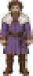
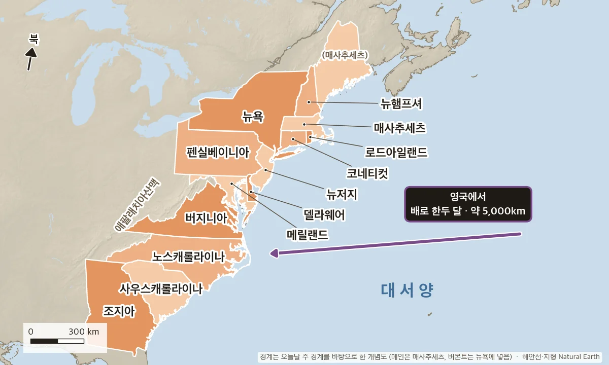
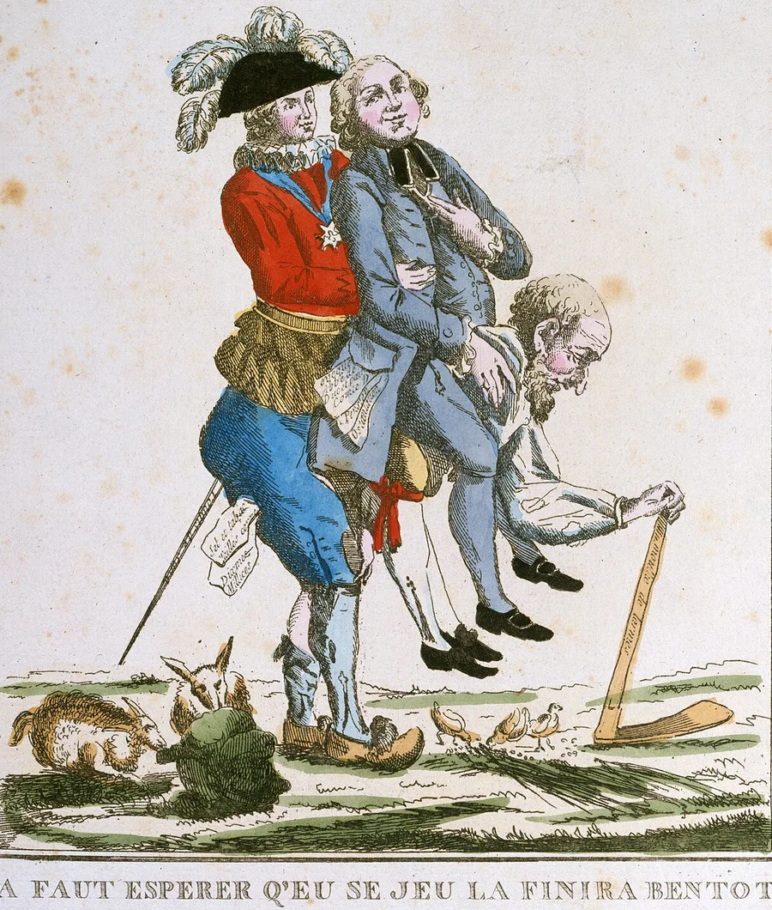
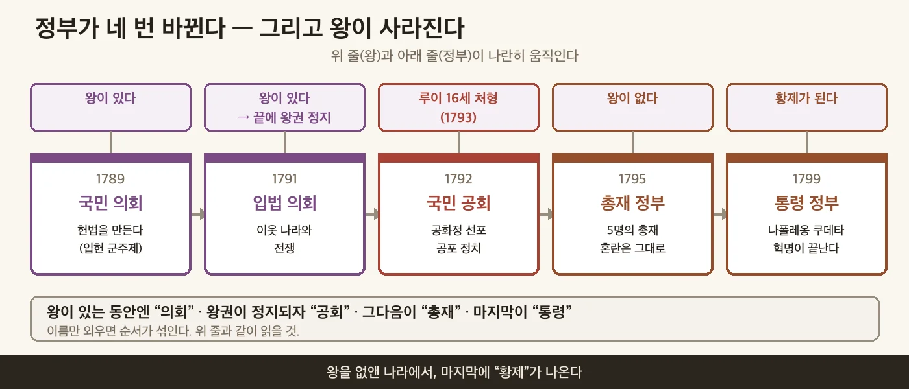
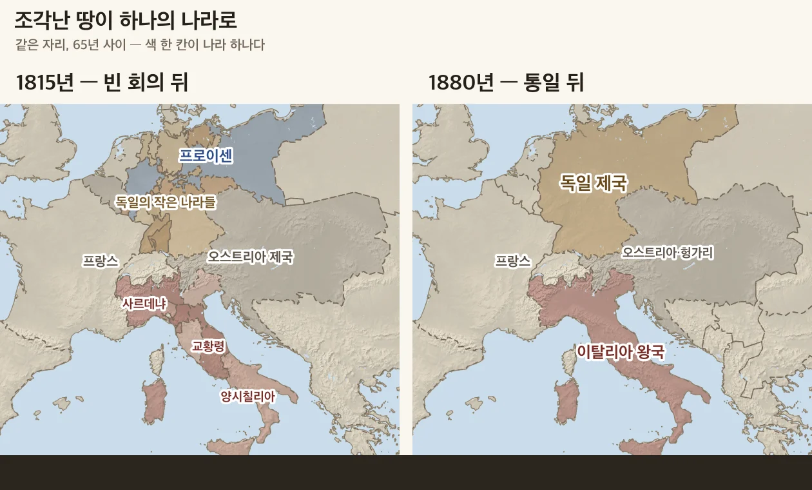

왕의 나라에서 국민의 나라로
🎙️ 오늘은 교과서 145쪽부터 157쪽까지, 혁명 다섯 장면을 한 시간에 정리해. 교과서를 펴 놓고 빈칸을 채우면서 따라오면 돼. 장면마다 붙잡을 질문은 하나야 — 나라의 주인이 누구로 바뀌었나?
- 영국 혁명·미국 혁명·프랑스 혁명의 전개 과정과 의의를 설명할 수 있다.
- 19세기 유럽과 아메리카로 혁명의 이념이 퍼져 나간 과정을 파악할 수 있다.
📕 교과서 145쪽 펴고 채우기 · 배정 시간 7분
🎙️ 지난 시간 기억나? 영국 왕은 왜 의회와 손잡아야 했을까? 짝에게 한 문장으로 말해 보고 시작하자.
🎙️ 영국 의회가 왕에게 거듭 내민 요구의 한가운데에는 세금이 있었어 — 세금은 우리 허락을 받고 걷으라는 것. 그런데 왕들은 이 요구를 쉽게 지키지 않았어. 그 요구가 어떻게 법이 되는지 따라가 보자.
17세기 영국에서는 시민 계급과 젠트리가 성장하였고, 이들 가운데 많은 수의 청교도들이 의회에 진출하였다. 찰스 1세가 의회를 무시하고 청교도를 탄압하자, 의회는 "의회의 동의 없이 세금을 부과할 수 없다."라는 내용의 ①을 제출하였다. 찰스 1세는 이를 받아들였으나 곧 의회를 해산하였고, 청교도들이 중심이 된 의회파와 국왕을 지지하는 왕당파 사이에 내전이 일어났다. 크롬웰이 이끈 의회파는 승리한 후 찰스 1세를 처형하고 공화정을 세웠다(②, 1642~1649). 그러나 크롬웰은 의회를 해산하고 독재 정치를 펼쳐 국민의 지지를 잃었다.
크롬웰이 죽자 다시 왕정이 시작되었다. 찰스 2세와 그 뒤를 이은 제임스 2세가 의회를 무시하자, 의회는 제임스 2세를 왕위에서 몰아내고 그의 딸 메리와 남편 윌리엄을 공동 왕으로 세웠다(③, 1688). 피를 흘리지 않고 정치 형태를 바꾸었기 때문에 이런 이름이 붙었다.
이듬해 메리 여왕과 윌리엄 3세는 의회가 제출한 ④을 받아들였다. 여기에는 의회에서 제정한 법이 국왕의 권력보다 앞선다는 내용이 담겨 있었다. 이로써 영국에서는 의회를 중심으로 한 ⑤의 기초가 마련되었다.

▲ 우세| 시점 | 내려간 쪽 | 의회의 상대 | 무슨 일이 있었나 |
| 1628 | 찰스 1세 | 찰스 1세 | 의회가 ①을 내밀자 찰스 1세는 받아들였지만, 곧 의회를 해산했다. |
| 1649 | 의회 | 찰스 1세 | ②에서 이긴 의회파가 찰스 1세를 처형하고 공화정을 세웠다. 그런데 몇 해 뒤 크롬웰이 의회마저 해산하고 혼자 다스려 국민의 지지를 잃었다. |
| 1660 | 찰스 2세 | 찰스 2세 | 크롬웰이 죽자 왕정이 돌아왔다. 찰스 2세와 그 뒤를 이은 제임스 2세가 다시 의회를 무시했다. |
| 1689 | 의회 | 윌리엄 3세와 메리 | 의회가 제임스 2세를 몰아낸 ③ 뒤, 새 왕 부부가 ④를 받아들였다. 이번엔 저울이 의회 쪽에서 멈췄다 — ⑤의 기초다. |
📕 교과서 146~147쪽 펴고 채우기 · 배정 시간 8분
🎙️ 13개 식민지는 영국에서 건너간 사람들이 세운 곳이야. 그런데 왜 영국과 전쟁까지 했을까? 실마리는 이번에도 세금이야.

17세기 이후 많은 영국인이 북아메리카 동부의 대서양 연안에 13개의 식민지를 세우고, 독자적인 의회를 구성하여 자유와 자치를 누렸다. 영국은 7년 전쟁의 영향으로 많은 돈이 필요해지면서 식민지를 간섭하기 시작하였다. 영국 정부가 각종 문서나 신문 등에 인지를 사서 붙이게 하는 방식으로 세금을 거두자, 식민지 주민들은 "⑥ 없는 곳에 과세할 수 없다."라며 저항하였다.
영국 정부는 인지세를 폐지하였으나 곧 설탕과 차 등에 세금을 부과하였다. 식민지 주민들은 보스턴항에 정박해 있던 영국 동인도 회사의 배를 습격하여 차 상자를 바다에 던졌다(⑦, 1773). 영국이 보스턴항을 봉쇄하고 주민들을 탄압하자 식민지 대표들은 대륙 회의를 열어 항의하였고, 이후 식민지 민병대와 영국군이 충돌하면서 독립 전쟁이 일어났다.
식민지 대표들은 조지 워싱턴을 총사령관에 임명하고, 미국 ⑧을 발표하였다(1776). 여기에는 모든 인간은 평등하게 태어났으며, 생명·자유·행복을 추구할 수 있는 권리를 갖는다는 내용이 담겨 있었다. 식민지군은 프랑스를 비롯한 여러 나라의 지원을 받아 승리하였고, 영국으로부터 독립을 인정받았다(파리 조약, 1783).
독립을 이룬 13개 식민지들은 연방제를 특징으로 하는 헌법을 만들었다. 헌법에는 주권이 국민에게 있다는 것과 국가의 권력을 입법, 행정, 사법으로 분리한다는 ⑨의 원칙이 담겨 있었다. 이후 각 주의 대표들은 조지 워싱턴을 초대 대통령으로 선출하고, 세계 최초의 민주 공화국인 아메리카 합중국(미국)을 수립하였다(1789).
📕 교과서 148~151쪽 펴고 채우기 · 배정 시간 11분
루이 16세 — 혁명이 일어났을 때의 프랑스 왕이다. 혁명이 과격해진 뒤 국민 공회가 처형했다.
로베스피에르 — 왕이 처형된 뒤 급진파를 이끌며, 혁명에 반대한다고 의심받은 사람들을 처형했다.
나폴레옹 — 쿠데타로 권력을 잡고 국민 투표를 거쳐 황제가 되었다. 유럽의 넓은 땅을 정복하거나 지배했지만 러시아 원정에 실패했다.
18세기 프랑스에서는 제1 신분인 성직자와 제2 신분인 귀족이 많은 토지를 가지고 있으면서도 세금을 내지 않는 특권을 누렸다. 반면 제3 신분인 평민은 국가 세금의 대부분을 부담하면서도 정치적 권리를 얻지 못하였다. 계몽사상과 미국 혁명의 영향을 받은 시민들은 자유와 평등을 꿈꾸며 이러한 낡은 질서(⑩)를 무너뜨리고자 하였다.

전쟁과 왕실의 사치로 경제가 어려워지자 루이 16세는 ⑪를 소집하였다. 제3 신분 대표들은 신분별 투표가 아닌 머릿수에 따른 투표를 요구하였으나 받아들여지지 않자, 독자적으로 국민 의회를 세우고 새로운 헌법이 만들어질 때까지 흩어지지 않겠다고 선언하였다(⑫).
루이 16세가 국민 의회를 억압하려 하자 분노한 파리 민중은 당시 구제도의 상징이었던 ⑬를 습격하였다. 이후 혁명은 전국으로 퍼졌고, 국민 의회는 봉건제 폐지를 선언하였다. 그리고 자유와 평등의 이념을 담은 '인간과 시민의 권리 선언'(⑭)을 발표하였다(1789).
그 뒤 혁명은 더욱 과격해졌다. 국민 공회는 공화정을 선포하고 루이 16세를 처형하였으며, 로베스피에르가 이끄는 급진파는 공포 정치를 펼쳤다. 그다음 들어선 총재 정부도 혼란을 해결하지 못하자, 나폴레옹이 쿠데타를 일으켜(1799) 프랑스 혁명은 사실상 막을 내렸다.

나폴레옹은 『나폴레옹 법전』을 편찬하여 새로운 시민 사회의 규범을 마련하였고, 국민 투표를 거쳐 황제의 자리에 올랐다. 이후 유럽 대부분 지역을 침략하였고, 영국을 굴복시키고자 유럽 대륙과 영국 사이의 무역을 금지하는 ⑮을 내렸다. 러시아가 이를 무시하자 러시아 원정에 나섰으나(1812) 실패하였고, 대프랑스 동맹에 크게 패하면서 몰락하였다.
나폴레옹의 정복 전쟁 과정에서 유럽 곳곳에 프랑스 혁명의 이념인 ⑯가 퍼졌으며, 민족의 단결을 주장하는 ⑰ 의식이 자라나기 시작하였다.
| 영국 | 미국 | 프랑스 | |
| 누구에게 맞섰나 | 의회를 무시한 왕 | 세금을 매긴 영국 | 왕과 특권 신분 |
| 처음 내건 요구 | 세금은 의회 동의로 | 대표 없이 세금 없다 | 머릿수대로 투표 |
| 남긴 문서 | 권리 장전 | 독립 선언문·헌법 | 인권 선언 |
| 왕은, 나라 모양은 | 왕 처형 → 공화정 → 왕 복귀 → 입헌 군주제 | 영국 왕에게서 독립 → 민주 공화국 | 공화정 → 왕 처형 → 황제 |
🎙️ 표를 세로로 읽어 봐. 위 두 줄을 보면 세 나라 모두 세금과 특권을 둘러싼 다툼이 큰 불씨였고, 결국 '나라의 주인은 국민' 쪽으로 기울었어. 그리고 마지막 줄을 봐. 영국도 프랑스도 왕을 처형했고 공화정을 거쳤어. 그 뒤 영국은 왕을 다시 불러 법 아래 두었고, 프랑스는 황제를 맞았지. 미국은 처음부터 왕 없는 나라를 세웠고. 끝으로, 표 바로 위 ⑯⑰이 든 문장이 다음 단계로 가는 다리야. 나폴레옹은 졌지만 그의 정복 전쟁 때 유럽에 퍼지고 자라난 두 생각은 남았어.
📕 교과서 152~157쪽 펴고 채우기 · 배정 시간 11분
🎙️ 빈 회의는 유럽의 시계를 혁명 전으로 되돌리려 했어. 그런데 한번 퍼진 생각은 되돌릴 수 없었지. 그 시계가 나라마다 어떻게 깨지는지 보자.
⏱ 시간이 모자라면 마지막 라틴 아메리카 문단(㉓·㉔)은 선생님 안내에 따라 수업 뒤에 채운다.
메테르니히 — 빈 회의를 이끌며 유럽을 프랑스 혁명 전으로 되돌리려 했다.
카부르 — 이탈리아 중북부를 사르데냐 왕국 아래 하나로 묶었다.
가리발디 — 의용대를 이끌고 이탈리아 남부를 점령해 사르데냐 국왕에게 바쳤다.
비스마르크 — 군사력을 키워 오스트리아와 프랑스를 차례로 물리치고 독일 제국을 세웠다.
링컨 — 노예제 확대에 반대했고, 남북 전쟁에서 북부를 이끌었다.
볼리바르 — 남아메리카 북부 여러 나라의 독립 투쟁을 이끌었다.
나폴레옹이 몰락한 후 유럽 각국의 대표들은 오스트리아의 빈에서 회의를 열었다(빈 회의, 1814~1815). 메테르니히가 이끈 이 회의에서 대표들은 유럽 각국의 영토와 지배권을 프랑스 혁명 이전으로 되돌리는 데 합의하였다. 이로써 ⑱가 형성되었다.
프랑스에서는 샤를 10세가 의회를 해산하고 시민의 자유를 제한하자, 7월 혁명(1830)이 일어나 루이 필리프를 왕으로 세운 입헌 군주제가 들어섰다. 그러나 새 왕정도 부유한 소수에게만 선거권을 주자, 파리 시민과 노동자들이 선거권 확대를 요구하며 다시 혁명을 일으켜 왕정을 폐지하고 공화정을 세웠다(⑲, 1848). 이 혁명의 영향으로 유럽에서 자유주의와 민족주의 운동이 더욱 확대되었고, 빈 체제는 사실상 무너졌다.
영국에서는 다른 나라들과 달리 의회를 중심으로 자유주의가 발전하였다. 1832년 선거법 개정으로 도시의 상공업자를 비롯한 중산 계급이 선거권을 얻었지만, 여전히 선거권을 얻지 못한 노동자들은 인민헌장을 발표하고 이를 의회에 제출하기 위한 서명 운동을 벌였다(⑳).
이탈리아에서는 사르데냐 왕국의 재상 카부르가 중북부를 통합하고, 가리발디가 남부를 점령하여 사르데냐 국왕에게 바치면서 이탈리아 왕국이 탄생하였다(1861). 독일에서는 프로이센의 재상 비스마르크가 ㉑ 정책을 바탕으로 군사력을 키웠다. 프로이센은 오스트리아와 프랑스를 차례로 물리쳤고, 1871년 빌헬름 1세가 황제로 즉위하면서 독일 제국이 세워졌다.

미국에서는 노예제를 두고 남부와 북부의 갈등이 심해졌다. 노예제 확대에 반대한 북부의 링컨이 대통령에 당선되자 남북 전쟁이 일어났고(1861~1865), 링컨의 ㉒으로 국제 여론의 지지까지 얻은 북부가 승리하였다.
라틴 아메리카에서는 미국의 독립과 프랑스 혁명의 영향으로 민족 운동이 퍼졌다. 가장 먼저 ㉓의 흑인 노예들이 프랑스에 저항하여 라틴 아메리카 최초의 독립국을 세웠다(1804). 이어 볼리바르와 산마르틴 같은 지도자들이 독립 투쟁을 이끌었고, 멕시코에서는 이달고 신부가 민중 봉기를 지휘하였다. 라틴 아메리카를 새로운 시장으로 쓰려던 영국이 독립을 지지하고, 미국이 유럽의 아메리카 대륙 간섭을 허용하지 않겠다고 선언하면서(㉔) 더 많은 나라가 독립하였다. 그러나 독립 뒤에는 독립운동을 이끈 크리오요가 정권을 장악하였고, 대다수 사람들은 가난에 시달렸다.
| # | 문장 | O/X |
| 1 | 영국에서 의회를 중심으로 한 정치의 기초는 왕을 처형한 혁명 뒤에 마련되었다. | |
| 2 | 미국 헌법은 나라를 빠르게 이끌기 위해 국가 권력을 대통령 한 사람에게 모았다. | |
| 3 | 혁명 전 프랑스에서는 성직자와 귀족도 평민과 똑같이 세금을 냈다. | |
| 4 | 나폴레옹은 전쟁에서 졌지만, 그의 정복 전쟁은 유럽 곳곳에 혁명의 이념을 퍼뜨리는 결과를 낳았다. | |
| 5 | 영국의 노동자들이 인민헌장을 내건 까닭은 선거권을 얻지 못했기 때문이다. |
🔜 산업화와 제국주의 — 정치가 바뀌는 사이 영국에서는 기계가 세상을 바꾸기 시작했어. 그 공장이 왜 바다 건너 땅까지 필요로 했는지 다음 시간에 본다.
📚 오늘 한 시간에 담지 못한 이야기(크롬웰의 의회 해산 장면, 프랑스 정부가 바뀐 과정, 이탈리아·독일 통일의 인물들, 라틴 아메리카 독립 영웅)는 원래 학습지 5-1-1~5-1-5에 그대로 있다.
A History of Nations — 지구본을 돌리고 아래 막대나 ‹ › 단추로 해를 옮기면 그때의 나라 경계가 칠해진다(영어, 1800·1850·1900·1914년처럼 정해진 해만). 1800 → 1850 → 1900을 차례로 눌러, 유럽 가운데의 여러 나라가 «German Empire»와 «Kingdom of Italy»로 합쳐지는 것과 남아메리카에 새 나라들이 생긴 것을 찾아보자.
⚠️ 경계는 대략이고 이름표가 틀린 곳도 있다. 1850년 지도에 1814년에 이미 갈라진 «Denmark-Norway»가 그대로 나온다. 교과서와 다르면 교과서를 따른다.
초상·풍자화는 위키미디어 공용(퍼블릭 도메인·CC0): 루이 16세(앙투안프랑수아 칼레, 1779) · 로베스피에르(작자 미상, 1790 무렵) · 나폴레옹(자크루이 다비드, 1812) · 메테르니히(토머스 로런스, 1815 무렵) · 카부르(안토니오 치세리, 1861) · 가리발디(1860 사진) · 비스마르크(프란츠 폰 렌바흐) · 링컨(알렉산더 가드너 사진, 1863) · 볼리바르(1823 무렵) · 풍자화(파리 카르나발레 박물관, 1789). 시소의 도트 그림은 Liberated Pixel Cup 캐릭터 레이어를 합성해 구성했다(OGA-BY 3.0, https://static.opengameart.org/OGA-BY-3.0.txt · 레이어별 저작자는 https://zzobakg-boop.github.io/vault-rag/worksheets/images/CREDITS.md).